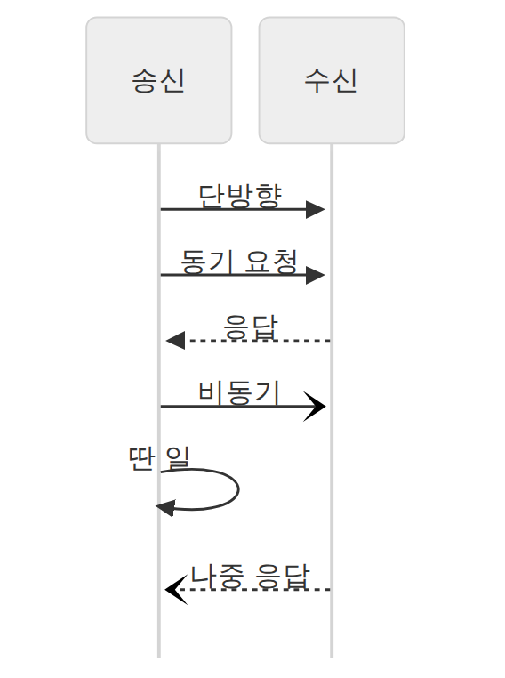
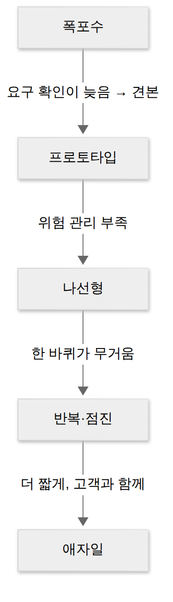
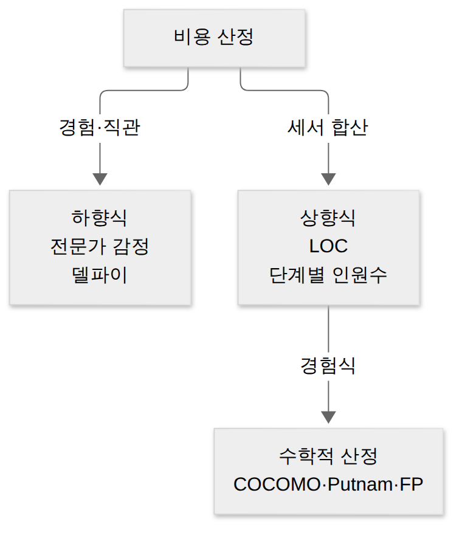
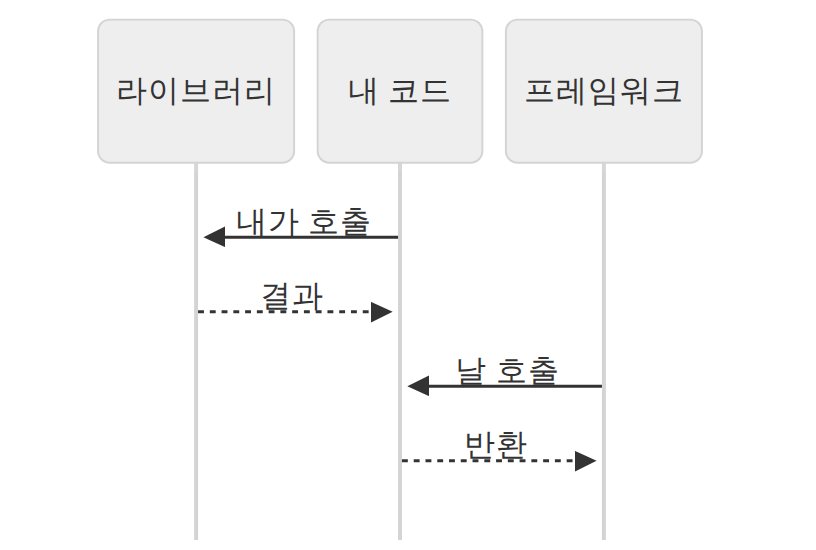
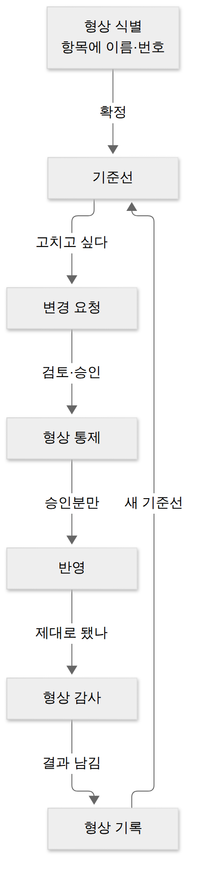

D023 · 4주차 주간 종합 복습 — 인터페이스부터 형상관리까지
복습A4A5A6 이번 주(D017~D021)는 인터페이스 연계 기술(A4)로 시작해, 개발 방법론·비용 산정·테일러링(A5)을 지나, 단위 모듈 구현·테스트와 형상관리(A6)까지 왔어요. 오늘은 새 진도 없이 한 주를 다시 꿰고, 3주 넘게 지난 A1~A3을 10문항으로 꺼내 봐요.
일요일 복습은 이사 다음 날 짐 정리 같아요. 박스는 다 옮겼는데, 어느 박스에 뭐가 들었는지 라벨을 다시 확인해야 월요일에 출근복을 찾을 수 있거든요.
- A4 송수신 구조·통신 유형·EAI·미들웨어를 하는 일로 구별할 수 있다
- A5 생명주기 모델·방법론·비용 산정(COCOMO 유형)·CMMI를 상황에 맞게 고를 수 있다
- A6 드라이버·스텁, 형상관리 활동, 버전관리 방식을 구별할 수 있다
- A1~A3 누적 문항으로 요구 분석·UML·응집도·SOLID의 헷갈리는 짝을 다시 설명할 수 있다
1. 이번 주 지도 — 연결, 방법, 만들고 지키기
세 범위는 따로 노는 단원이 아니라 실제 프로젝트에서 차례로 등장해요. 요구를 받고 나면 먼저 다른 시스템과의 연결부(인터페이스)를 정해야 설계가 끝나고, 그다음 팀이 어떤 생명주기와 방법론으로, 얼마의 비용으로 일할지 정해요. 그 방식대로 코드를 짜기 시작하면 모듈 단위로 테스트하고, 바뀌는 코드를 형상관리로 붙잡아요. 이사로 치면 새 집 문과 주소를 먼저 정하고(A4), 업체와 견적을 고른 뒤(A5), 짐을 하나씩 확인하며 들이는(A6) 순서예요.
이 순서를 머리에 두면 “방법론 테일러링은 언제 하나”, “형상관리는 개발 중에만 하나” 같은 문제를 흐름으로 풀 수 있어요. → 다음: 지도 맨 위, 시스템끼리 잇는 A4부터 다시 봐요.
2. A4 다시 보기 — 시스템끼리 잇기
인터페이스 요구사항은 시스템이 다른 시스템·모듈과 주고받는 데이터와 방식에 대한 요구예요. 같은 시스템 안 모듈끼리면 내부, 다른 기관의 시스템과면 외부 인터페이스예요. 요구는 다시 “무엇을 주고받나”인 기능과 “얼마나 빠르고 안전하게”인 비기능으로 나뉘어요. 주문번호를 보낸다는 기능, 5분 안에 암호화해서 보낸다는 비기능이에요.
대상 식별은 연계에 참여하는 시스템을 송신·중계·수신으로 나누는 일이에요. 송신 시스템은 데이터를 만들어 보내고, 수신 시스템은 받아서 자기 쪽에 반영해요. 가운데 중계 서버는 단순 전달자가 아니라 송수신 현황을 모니터링하는 관제탑 역할까지 해요.
연계 기술은 실제로 선을 잇는 수단이에요. DB Link는 DB에 링크 객체를 만들어 상대 DB를 직접 조회하고, DB Connection은 커넥션 풀로 DB에 붙고, API·Open API는 상대가 공개한 함수로 접근해요. JDBC는 자바 프로그램이 DB에 연결하는 드라이버, Hyperlink는 웹에서 링크로 이동하는 방식이에요. Socket은 서버가 통신용 객체를 만들고 포트를 열어 두면 클라이언트가 연결을 맺는 방식이라, 네트워크 프로그래밍을 해 본 분이면 가장 익숙한 그림이에요.
다음은 “보낸 뒤 어떻게 기다리나”예요. 통신 유형은 세 가지예요. 단방향은 보내고 끝이고, 동기는 응답이 올 때까지 기다리고, 비동기는 요청과 응답을 떼어 기다리지 않아요. 동기는 전화, 비동기는 문자예요. 전화는 상대가 받을 때까지 수화기를 들고 서 있어야 하지만, 문자는 보내 놓고 라면을 끓이러 가도 돼요.

통신 유형과 자주 섞이는 게 처리 유형이에요. 처리 유형은 “한 건씩 바로(실시간), 조금 모았다가(지연 처리), 정해진 시각에 한꺼번에(배치)”라서 기다리는 법이 아니라 모으는 법이에요. 출제자는 “통신 유형이 아닌 것”에 배치를 끼워 넣어요. 배치도 데이터를 보내는 방식처럼 들리길 바라면서요.
EAI(Enterprise Application Integration)는 기업 안 여러 애플리케이션을 묶는 통합 솔루션이고, 묶는 모양이 네 가지예요. Point-to-Point는 1:1로 직접 잇는 그물이라 단순하지만 시스템이 늘면 선이 폭증해요. Hub & Spoke는 가운데 허브 하나를 거치는 별 모양이라 확장·유지보수가 쉽지만 허브가 장애 나면 전체가 멈춰요. 환승 허브 공항과 같아서, 어디든 한 번만 갈아타면 가지만 허브 공항에 폭설이 오면 전국 항공편이 함께 묶여요.
Message Bus는 애플리케이션 사이에 미들웨어 버스를 두는 방식이라 확장성이 좋고 대용량 처리에 유리해요. Hybrid는 그룹 안은 허브로, 그룹 사이는 버스로 섞어 쓰는 방식이에요. 서비스 단위로 버스를 쓰는 ESB는 Message Bus를 웹 서비스·표준 기반으로 발전시킨 형태예요.
미들웨어는 서로 다른 시스템 사이에서 통신을 대신 해 주는 소프트웨어예요. 여섯 가지는 “중간에서 무엇을 들고 다니나”로 구별하면 빨라요. RPC는 함수 호출을, MOM은 편지(메시지)를, ORB는 객체 요청을, TP-Monitor는 거래 장부를 들고 다녀요. WAS는 웹의 동적 요청을 처리하고, DB 미들웨어는 DB 접속을 대신해요.
한 장 요약 — 여섯 미들웨어를 하는 일과 키워드로 정리하면 이래요. 각 항목은 바로 위 문단과 그림에서 설명한 내용이에요.
| 미들웨어 | 하는 일 | 시험 키워드 |
|---|---|---|
| DB 미들웨어 | 애플리케이션과 DB 사이의 접속·통신을 대신 | ODBC, IDAPI |
| RPC | 원격 프로시저를 로컬 함수처럼 호출 | 원격 함수 호출 |
| MOM | 메시지를 큐에 넣어 비동기로 전달 | 메시지, 비동기, 느려도 안정 |
| TP-Monitor | 온라인 트랜잭션을 처리·감시 | 항공 예약·은행, 빠른 응답 |
| ORB | 객체 지향 환경에서 객체 요청을 중개 | CORBA |
| WAS | 동적 웹 콘텐츠 처리 | Tomcat, JEUS, WebLogic |
→ 다음: 연결 설계까지 끝났어요. 이제 이걸 어떤 순서·관점으로, 얼마의 비용으로 만들지 정할 차례예요.
3. A5 다시 보기 — 어떤 방식으로, 얼마에 만들까
A5의 용어가 많아 보이는 건 서로 다른 질문에 대한 답이 섞여 있어서예요. 생명주기 모델은 분석·설계·구현·테스트를 어떤 순서로 돌지 정하고, 개발 방법론은 시스템을 기능·데이터·객체·컴포넌트 중 무엇을 중심으로 쪼갤지 정해요. 요구공학은 어떤 조합을 고르든 빠지지 않는 공통 활동이에요.
생명주기 모델의 계보
폭포수 모델은 단계를 순서대로 밟고 단계마다 문서로 승인받아 넘어가요. 관리가 쉽지만 요구를 늦게 확인하는 게 약점이라, 요구가 불분명하면 견본부터 보여 주는 프로토타입 모델이 나왔어요. 큰 프로젝트에서 위험을 다루지 못하는 문제를 고치려고 나선형 모델이 위험 분석을 매 바퀴에 넣었고, 이후 작게 나눠 여러 번 내놓는 반복·점진 모델과 애자일로 이어졌어요.

나선형 모델은 보헴이 제안한 모델로, 계획 수립 → 위험 분석 → 개발(공학적 개발) → 고객 평가를 한 바퀴로 반복해요. 바퀴를 돌 때마다 만든 결과가 커지고, 매 바퀴에 위험 분석이 있어 대규모·고위험 프로젝트에 맞아요. 대가는 위험 분석 역량이 없으면 바퀴만 도는 회의가 된다는 점이에요.
개발 방법론은 다섯 가지를 관점으로 기억해요. 구조적은 기능(처리 흐름)을 DFD로 분할, 정보공학은 기업 전체의 데이터를 중심으로 계획부터 구축까지, 객체지향은 데이터와 행위를 묶은 객체로, CBD는 재사용 가능한 컴포넌트를 조립하는 방식이에요. 제품 계열 방법론은 비슷한 제품군의 공통 부분을 재사용하는 데 초점을 둬요.
비용 산정 — 얼마 들까
비용 산정은 크게 하향식과 상향식으로 갈려요. 하향식은 경험 많은 사람의 판단으로 전체를 먼저 정하는 방식으로, 전문가 감정과 여러 전문가의 의견을 조정자가 모으는 델파이 기법이 있어요. 상향식은 작업을 잘게 세서 합치는 방식으로 LOC(줄 수)·개발 단계별 인원수 기법이 있고, 그 계열의 수학적 산정 기법으로 COCOMO·Putnam·FP가 있어요.

COCOMO는 보헴이 만든 모형으로, 예상 코드 줄 수(LOC)로 비용을 계산해요. 프로젝트 성격에 따라 개발 유형 셋으로 나누는데, 사내 업무용처럼 작고 익숙한 조직형(5만 라인 이하), 컴파일러·운영체제 같은 반분리형(30만 라인 이하), 실시간·하드웨어 제어처럼 크고 빡빡한 내장형(30만 라인 초과)이에요. 반분리형은 이름부터 중간 반이에요. 조직형만큼 익숙하지도, 내장형만큼 빡빡하지도 않은 쪽이에요.
COCOMO의 함정은 축이 둘이라는 거예요. 조직형·반분리형·내장형은 유형(규모·성격)이고, 기본·중간·발전은 종류(계산을 얼마나 자세히 하나)예요. 선지에 “중간형”이 유형인 척 섞여 있으면 바로 걸러 내야 해요.
Putnam 모형은 시간에 따라 투입 인력이 어떻게 변하는지를 Rayleigh-Norden 곡선으로 보고, 이를 자동화한 도구가 SLIM이에요. FP(기능 점수) 모형은 알브레히트가 제안한 것으로 코드 줄이 아니라 입력·출력·조회·파일 같은 기능의 수와 복잡도로 점수를 매기며, 자동화 도구가 ESTIMACS예요.
한 장 요약 — 네 수학적 모형이 무엇을 세서 무엇을 내놓는지예요.
| 모형 | 무엇을 세나 | 짝 키워드 |
|---|---|---|
| COCOMO | 예상 코드 줄 수(LOC) | 보헴, 조직형·반분리형·내장형 |
| Putnam | 시간에 따른 인력 분포 | Rayleigh-Norden 곡선, SLIM |
| FP | 기능의 수와 복잡도 | 알브레히트, ESTIMACS |
| LOC 기법 | 낙관·비관·중간치로 줄 수 추정 | (낙관 + 4×중간 + 비관) ÷ 6 |
테일러링·개발 표준·프레임워크 — 우리 조직에 맞추고 지키기
테일러링은 표준 방법론을 그대로 쓰지 않고 프로젝트 특성에 맞게 절차·산출물을 더하고 빼는 일이에요. 기준은 내부와 외부로 나뉘는데, 내부 기준은 목표 환경·요구사항·프로젝트 규모·보유 기술 넷이고, 외부 기준은 법적 제약과 표준 품질 기준 둘뿐이에요. 외부는 “우리가 바꿀 수 없는 것”이라고 기억하면 갈려요.
| 구분 | 기준 | 예 |
|---|---|---|
| 내부 | 목표 환경, 요구사항, 프로젝트 규모, 보유 기술 | 모바일 앱인가, 팀이 처음 쓰는 기술인가 |
| 외부 | 법적 제약, 표준 품질 기준 | 개인정보보호법, 금융권 품질 기준 |
개발 표준은 조직의 프로세스를 국제 기준에 맞춰 평가·개선하는 틀이에요. ISO/IEC 12207은 생명주기 프로세스를 기본·지원·조직 생명주기로 나눈 표준이고, CMMI는 조직의 프로세스 성숙도를 5단계로, SPICE(ISO/IEC 15504)는 프로세스 능력을 0~5의 6단계로 평가해요. CMMI 2단계는 “프로젝트마다 각자 알아서 잘 굴러가는” 회사, 3단계는 “회사 전체가 같은 레시피북을 펴 놓고 요리하는” 회사예요.
개발 프레임워크는 공통 기능을 미리 만들어 둔 재사용 가능한 뼈대예요. 특성은 모듈화·재사용성·확장성·제어의 역흐름(IoC) 넷이고, 시험에서 가장 많이 묻는 건 IoC예요. 라이브러리는 내 코드가 필요할 때 부르지만, 프레임워크는 흐름을 쥐고 내 코드를 불러요. 스프링 컨트롤러 메서드를 직접 호출한 적이 없는데도 요청이 오면 실행되는 게 IoC예요.

→ 다음: 방식과 비용, 뼈대까지 정했어요. 이제 실제로 모듈을 만들고, 그 코드를 검사하고 지키는 A6이에요.
4. A6 다시 보기 — 만들고 지키기
단위 모듈은 하나의 기능을 수행하는 독립된 코드 단위이고, 모듈끼리는 IPC(공유 메모리·소켓·메시지 큐 등)로 데이터를 주고받아요. 다 만든 모듈은 단위 테스트를 거치는데, 코드 내부 경로를 보며 검사하면 화이트박스, 입력과 출력만 보며 명세대로 동작하는지 보면 블랙박스예요.
문제는 테스트 대상의 위·아래 모듈이 아직 없을 때예요. 그래서 대역을 세워요. 테스트 드라이버는 대상 모듈을 호출하고 결과를 받아 주는 가짜 상위 모듈, 테스트 스텁은 대상 모듈이 호출하면 미리 정한 값을 돌려주는 가짜 하위 모듈이에요. 드라이버는 큐 사인을 주는 감독, 스텁은 대사 한 줄만 받은 단역이에요. 둘 다 진짜 배우가 오면 퇴장해요.
코드는 만드는 순간부터 계속 바뀌어요. 형상관리는 소프트웨어의 변경 사항을 체계적으로 추적·통제하는 활동이고, 소스뿐 아니라 문서·설계서까지 대상이에요. 출발점은 기준선(베이스라인)으로, 공식 검토를 거쳐 확정된 시점의 산출물이에요. 기준선은 바닥에 붙인 노란 테이프예요. 그 안쪽은 결재 없이 발을 들이면 안 돼요.
활동은 네 가지예요. 형상 식별은 관리할 항목을 정하고 이름·번호를 붙이고, 형상 통제는 변경 요청을 검토·승인해 기준선에 반영되게 조정해요. 형상 감사는 반영된 변경이 제대로 됐는지 기준선의 무결성을 확인하고, 형상 기록은 그 결과를 기록·보고해요. 교재에 따라 버전 제어를 더해 5기능으로 적기도 해요.

버전관리 도구는 형상관리를 실제로 돌리는 도구로, 저장소 구조에 따라 세 방식이에요. 공유 폴더 방식(RCS·SCCS)은 공유 폴더에 파일을 복사해 쓰는 원시적인 방식이고, 클라이언트/서버 방식(CVS·SVN)은 중앙 저장소 하나에 모두가 커밋해요. 분산 저장소 방식(Git 등)은 원격 저장소를 복제한 로컬 저장소가 각자에게 있어, 오프라인에서도 커밋하고 나중에 원격에 반영해요.
| 방식 | 저장소 | 대표 도구 |
|---|---|---|
| 공유 폴더 | 공유 폴더 하나에 직접 복사 | RCS, SCCS |
| 클라이언트/서버 | 중앙 저장소 1개, 서버 장애 시 협업 중단 | CVS, SVN |
| 분산 저장소 | 원격 + 개인별 로컬 저장소, 오프라인 커밋 가능 | Git, Mercurial, Bazaar |
→ 다음: 이번 주 세 범위를 다 돌았어요. 이번 주 성적표를 보고, 3주 전 범위로 넘어가요.
5. 이번 주 약점 점검
D017~D021 확인 문제는 20개 중 19개를 맞혔어요. 유일하게 틀린 문항은 일일 스크럼(D009-4 재확인)이고, 10/29에 예정된 재확인에서 다시 봐요. 짧게만 정리하면, 스프린트 계획은 스프린트 시작 때 한 번, 일일 스크럼은 매일 15분 다음 24시간 계획 조정, 리뷰는 결과물 검사, 회고는 일하는 방식 개선이에요.
열린 오답 일정은 결합도 순서(10/27), OMT 3모델·CASE(10/28), 일일 스크럼(10/29)이에요. 오늘 누적 문항은 이 개념들을 피해서 골랐어요. 예정일 전에 미리 풀어 버리면 시험 전날 벼락치기처럼 기억이 금방 휘발하니, 숙제는 날짜에 맞춰 꺼내요. 다음 주 월요일 D024부터 A7의 매뉴얼·품질 표준·빌드 자동화로 1과목을 마무리하고, 10/31부터 2과목으로 넘어가요.
6. A1~A3 한 장 요약 — 3주 전을 다시 꺼내기
3주 전 내용을 다시 꺼내는 건 망각 곡선과의 줄다리기예요. 줄을 놓는 쪽은 대개 “이건 확실히 안다”고 생각한 쪽이에요. 오늘 누적 10문항이 어디를 묻는지 먼저 지도로 보고, 아래 문단으로 핵심을 한 번씩 되살려요.
A1 요구 분석. 요구는 도출 → 분석 → 명세 → 확인 순으로 다뤄요. 도출 기법은 상황으로 고르는데, 소수 핵심 담당자에게 깊이 묻는 건 인터뷰, 다수에게 같은 질문은 설문이에요. 비기능 요구는 “가동률 99.9%”처럼 측정·검증할 수 있게 써야 하고, “안정적이어야 한다”는 모호해서 나쁜 요구예요.
A1 UML·애자일·추적. UML 관계에서 집합은 빈 마름모로 부분이 전체와 따로 살 수 있고, 합성은 채운 마름모로 전체와 생명주기를 같이해요. 애자일 선언은 “계획을 따르기보다 변화에 대응하기”처럼 오른쪽보다 왼쪽에 가치를 둬요. 자료 사전 기호는 = 정의, + 연결, ( ) 생략 가능, { } 반복, [ | ] 선택, ** ** 주석이에요. 요구 추적은 요구에서 구현·테스트로 가면 정방향(누락 찾기), 반대로 오면 역방향(근거 없는 기능 찾기)이에요.
A2 화면 설계. 설계 산출물은 와이어프레임(배치 뼈대) → 목업(실물 같은 정적 화면) → 스토리보드(화면별 설명·정책·기능·DB 연동까지 담은 최종 참고 문서) → 프로토타입(동작하는 견본) 순으로 구체화돼요.
A3 애플리케이션 설계. 아키텍처 품질 속성은 시스템 측면(성능·보안·가용성 등), 비즈니스 측면(시장 적시성·비용과 혜택 등), 아키텍처 측면(개념적 무결성·정확성·구축 가능성 등)으로 나눠요. 응집도는 우연적 → 논리적 → 시간적 → 절차적 → 교환적 → 순차적 → 기능적 순으로 강해지고, 비슷한 처리를 모아 플래그로 고르는 게 논리적이에요. SOLID 중 ISP는 쓰지 않는 메서드에 의존하지 않도록 인터페이스를 쪼개라는 원칙이에요.
7. 시험 포인트·암기 단서
설명을 다 읽은 뒤 정리용으로 쓰세요. 이번 주 오답이 거의 없었다는 건 개념은 잡혔다는 뜻이고, 남은 건 비슷한 이름끼리의 자리 바꾸기 함정이에요. 출제자는 새 개념을 내기보다 이름표 두 개를 슬쩍 바꿔 다는 걸 더 좋아하거든요.
확인 문제
- 쇼핑몰 시스템과 물류사 시스템의 연계 요구사항 중 비기능적 요구사항에 해당하는 것은?
- 인터페이스 대상 식별에서, 송신 시스템과 수신 시스템 사이에서 데이터를 받아 전달하고 송수신 현황을 모니터링하는 구성 요소는?
- 서버가 통신을 위한 객체를 생성해 포트를 할당하고, 클라이언트의 요청이 오면 연결을 맺어 데이터를 주고받는 연계 기술은?
- 모든 데이터 전송이 하나의 중앙 허브를 거치며, 확장과 유지보수는 쉽지만 허브에 장애가 나면 전체 시스템에 영향을 주는 EAI 구축 유형은?
- 네트워크 너머에 있는 원격 프로시저를 마치 로컬 프로시저처럼 호출할 수 있게 해 주는 미들웨어는?
- 고객의 요구가 분명하지 않아 견본을 먼저 만들어 보여 주고, 고객의 피드백을 받아 요구를 확정해 가는 소프트웨어 생명주기 모델은?
- COCOMO 모형의 개발 유형 중, 컴파일러나 운영체제처럼 30만 라인 이하의 중간 규모 소프트웨어에 해당하는 것은?
- CMMI 성숙도 단계 중, 조직 차원의 표준 프로세스가 정의되어 있고 각 프로젝트가 이를 맞춤 적용하는 단계는?
- 단위 모듈 테스트에서, 아직 완성되지 않은 상위 모듈을 대신해 테스트 대상 모듈을 호출하고 그 결과를 받아 주는 임시 모듈은?
- 원격 저장소를 복제한 로컬 저장소에서 개발자가 커밋하고, 나중에 원격 저장소에 변경을 반영하는 버전관리 방식은?
- (누적) 다음 중 측정하고 검증할 수 있도록 작성된 비기능 요구사항은?
- (누적) 소수의 핵심 업무 담당자에게 예외 처리 업무를 깊이 있게 물어 파악하려 할 때 가장 알맞은 요구사항 도출 기법은?
- (누적) UML 관계 중, 부분 객체가 전체 객체와 독립적으로 존재할 수 있으며 전체 쪽에 빈 마름모로 표기하는 관계는?
- (누적) 애자일 선언에서 말하는 가치로 옳은 것은?
- (누적) 자료 사전에서 '생략 가능'을 뜻하는 기호는?
- (누적) 요구사항에서 설계·구현·테스트 방향으로 따라가는 정방향 추적으로 주로 발견하는 문제는?
- (누적) 화면별 설명, 정책, 기능 정의, DB 연동 정보까지 담아 디자이너와 개발자가 최종적으로 참고하는 UI 설계 산출물은?
- (누적) 소프트웨어 아키텍처 품질 속성 중 아키텍처 측면에 해당하는 것은?
- (누적) 유사한 성격의 처리들을 한 모듈에 모아 두고, 넘겨받은 플래그 값에 따라 그중 하나를 골라 실행하는 응집도는?
- (누적) 클라이언트가 자신이 사용하지 않는 메서드에 의존하지 않도록 큰 인터페이스를 작은 인터페이스들로 분리해야 한다는 객체지향 설계 원칙은?
고른 뒤 답안 복사 → 디스코드 공부 채널에 붙여넣기 하면 돼요.
답장: 정처기 D023: 1)번호 2)번호 3)번호 … 20)번호
내일 D024는 A7 제품소프트웨어 매뉴얼·품질 표준·버전 관리 용어·빌드 자동화예요.